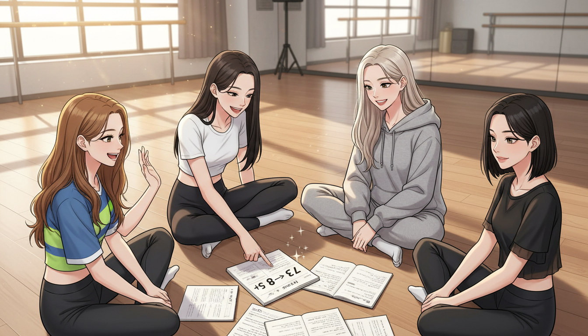
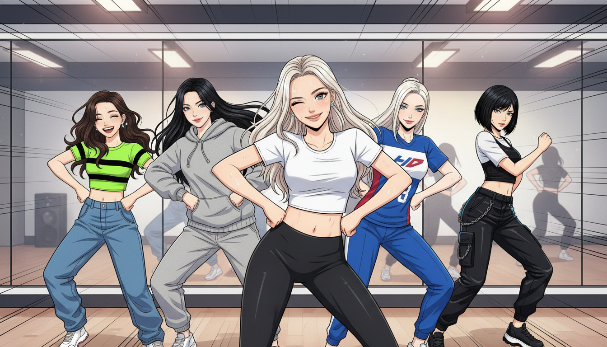
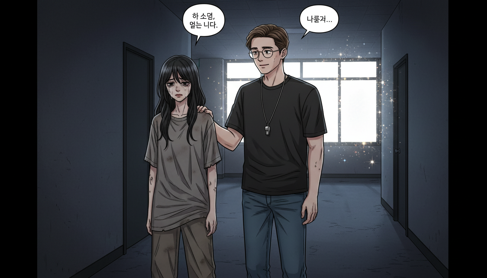
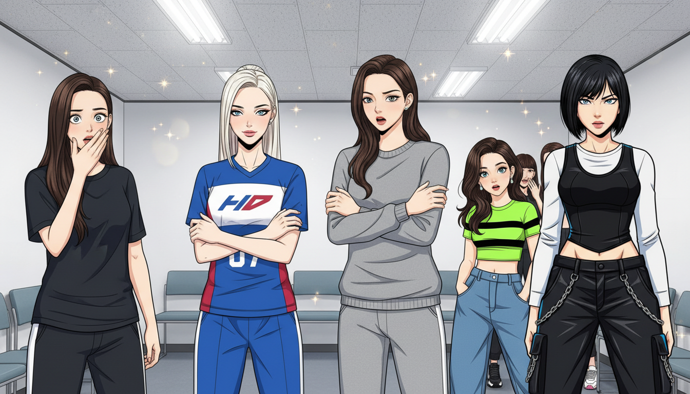
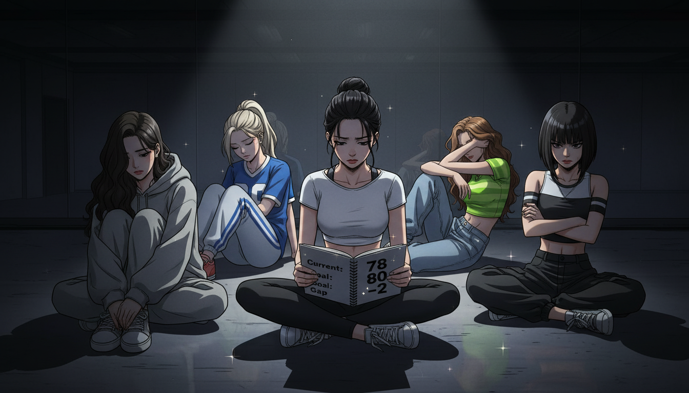
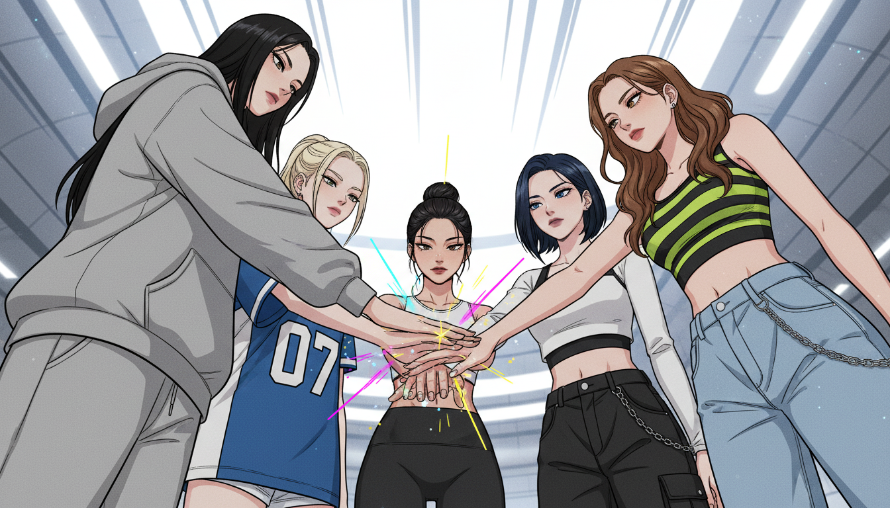
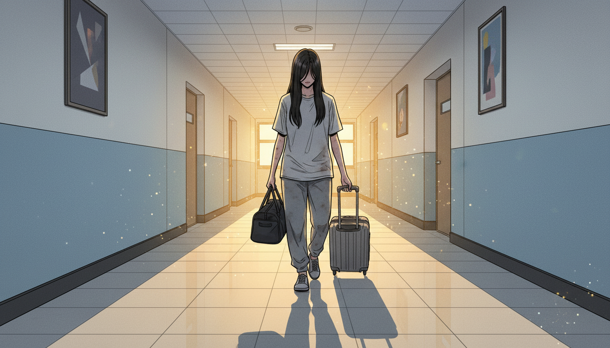
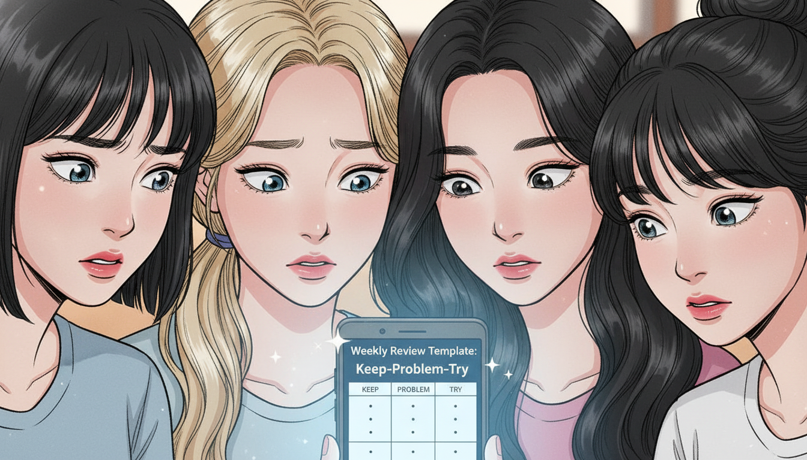

🎤 Dream High - K-POP 연습생 AI 성장기
Episode 15: 마지막 경고

1월 2일 오후 3시, 연습실. 5명이 원형으로 앉아 노트를 펼치고 있다. 주간 회고.
1월 2일 (목) 새해
2차 평가까지 D-30일
새해 첫 주간 회고.
민지는 노트를 펼쳤다.
Week 3 체크 (12/30-1/5):
- 개인 평균 점수: 73 → 78점 (+5점)
- 팀 동기화 점수: 90점 (유지)
- 팀 시간 참석률: 100%
채원이 말했다. "좋네. 개인 점수 많이 올랐어."
아린이 고개를 끄덕였다. "Yeah, from 73 to 78. Almost there."
유나가 물었다. "80점까지 2점 남았네요?"
"맞아." 민지가 답했다. "한 달 있으면 될 거 같은디."
하늘이 말했다. "팀 동기화도 90점 유지. 괜찮은데?"
채원이 노트에 적었다.
개선점 (Week 3):
- 민지: 보컬 롱톤 5초 → 7초 (+2초)
- 아린: 가창 안정도 향상
- 채원: 춤 표현력 개선
- 유나: 호흡 조절 나아짐
- 하늘: 랩 타이밍 정확
"다들 잘하고 있어." 채원이 웃었다.
민지는 생각했다. '통합 스케줄... 효과 있는디.'
개인도 하고, 팀도 지킨다. 둘 다 할 수 있었다.

5명이 연습 중. 땀 흘리지만 표정은 밝다. 성장이 보인다.
다음 주.
1월 5일 (일)
2차 평가까지 D-27일
민지는 새벽 6시에 일어났다. 보컬 연습. Week 4 시작.
롱톤 연습. 숨을 크게 들이마셨다. 복식호흡. 손을 배에 올렸다.
"아~"
7초. 8초. 9초.
민지는 멈췄다. 9초. 처음으로 9초를 버텼다.
'됐어...' 민지는 웃었다.
오후 2시. 팀 집중 블록.
5명이 안무를 추었다. 타이밍이 맞았다. 표정도 자연스러웠다. 에너지도 높았다.
채원이 거울을 봤다. "좋아. 이 정도면 2차도 될 것 같아."
아린이 물었다. "What's the passing score again?"
"팀 80점, 개인 80점." 채원이 답했다.
유나가 계산했다. "팀은 지금 90점이니까 괜찮고, 개인은 78점이니까... 2점만 더?"
"응." 민지가 고개를 끄덕였다. "한 달이면 충분할 거 같아."
하늘이 말했다. "ㅇㅈ. 할 수 있어."

복도. 한소연이 박지훈과 이야기하고 있다. 멀리서 5명이 지나가는 게 보인다.
같은 시각, 복도.
한소연이 박지훈 앞에 서 있었다.
"선생님... 저..." 한소연의 목소리가 떨렸다.
박지훈이 한숨을 쉬었다. "소연아, 정말 미안해. 본부 결정이야."
"7년... 7년을 했는데..." 한소연이 눈물을 참았다.
"알아. 네가 얼마나 노력했는지 다 알아. 근데... 이번 평가에서 개인 점수가..."
"68점..." 한소연이 중얼거렸다. "2점 모자랐어요. 단 2점..."
박지훈이 어깨에 손을 올렸다. "소연아, 넌 정말 잘했어. 근데 회사 기준이..."
멀리서 PRISM 5명이 지나갔다. 웃으며 이야기하고 있었다.
한소연은 그들을 봤다. '저 애들... 잘하고 있네.'

대기실. 5명이 한소연 소식을 들었다. 충격받은 표정.
다음날, 대기실.
"들었어?" 다른 연습생이 말했다. "한소연 선배... 계약 만료됐대."
민지는 귀를 기울였다.
"진짜? 7년차인데?"
"응. 개인 평가 68점. 70점 미만이면 계약 연장 안 된대."
민지는 충격을 받았다. 68점. 70점보다 2점 낮았다.
채원이 작게 말했다. "2점..."
아린도 들었다. "Only 2 points..."
유나가 떨리는 목소리로 물었다. "그럼... 한소연 선배 어떻게 돼요?"
"데뷔 못 하고... 나가는 거지."

연습실. 5명이 말없이 앉아 있다. 무거운 분위기.
연습실로 돌아왔다. 5명이 바닥에 앉았다.
침묵.
민지는 생각했다. '68점. 70점 기준. 2점 차이로 7년이 끝났네...'
지금 우리는 78점. 80점 목표. 역시 2점 차이.
채원이 말했다. "우리도... 2점 차이야."
"What?" 아린이 물었다.
"지금 78점. 목표 80점. 2점 모자라. 한소연 선배처럼."
유나가 눈물을 글썽였다. "그럼... 우리도 2점 못 채우면..."
"탈락이야." 하늘이 말했다.
민지는 노트를 펼쳤다.
현재 상태:
- 개인 평균: 78점
- 목표: 80점
- 차이: 2점
- 남은 시간: D-27일
한소연 선배:
- 평가 점수: 68점
- 기준: 70점
- 차이: 2점
- 결과: 계약 만료
민지는 펜을 내려놓았다.
'2점... 단 2점으로 7년이 끝나는구나...'
채원이 말했다. "우리... 더 열심히 해야 해."
"We're already working hard." 아린이 답했다.
"알아. 근데... 충분하지 않을 수도 있어. 한소연 선배도 열심히 했잖아."
유나가 물었다. "그럼... 어떻게 해야 해요?"
채원이 생각했다. "지금까지는... 계획대로 했어. 개인 플랜, 팀 루틴, 통합 스케줄. 근데 이제는..."
"Continuous improvement." 아린이 말했다.
"응?" 민지가 물었다.
"계속 개선. 매주 피드백 받고, 매주 나아지고. 멈추지 않는 거."
민지는 생각했다. 그래. 지금까지는 플랜을 따라했다. 근데 플랜만으로는 부족해. 매주 체크하고, 매주 개선해야 해.
Claude한테 물어볼까? 주간 회고를 어떻게 더 잘 할 수 있는지.
민지는 휴대폰을 꺼냈다.
💡 Hands-On Tutorial: 민지's 주간 회고 및 개선 루프
Real-world situation: 민지와 PRISM 멤버들은 개인 78점, 팀 90점까지 성장했지만, 한소연 선배의 탈락(68점, 2점 부족)을 보며 "2점 차이"의 무게를 깨달았다. 목표 80점까지 2점 남은 상황에서, 단순히 계획을 따르는 것이 아니라 매주 피드백을 받아 지속적으로 개선해야 한다는 필요성을 느꼈다.
Copy-paste prompt:
당신은 {분야, 예: "K-POP 아이돌"} 성과 관리 전문가입니다.
{이름, 예: "민지"} 팀이 다음 상황입니다:
**현재 성과:**
- 개인 평균 점수: {현재, 예: "78점"}
- 목표 점수: {목표, 예: "80점"}
- 차이: {차이, 예: "2점"}
- 남은 기간: {기간, 예: "27일 (약 4주)"}
**위기 인식:**
- 같은 환경의 선배가 2점 차이로 탈락
- "2점"이 작아 보이지만 치명적
- 단순 반복으로는 정체 가능성
**주간 회고 현황:**
- 매주 일요일 3시 실시
- 체크 항목: 개인 점수, 팀 점수, 참석률
- 문제: 단순 점수 확인만 함, 개선 액션 불명확
지속적 개선을 위한 **체계적 주간 회고 프로세스**를 만들어주세요:
1. **데이터 수집**
- 이번 주 측정 항목 (구체적)
- 수치화 방법 (주관 아닌 객관)
2. **분석 프레임워크**
- 잘된 점 (Keep)
- 개선 필요 (Problem)
- 다음 주 실험 (Try)
3. **개선 우선순위**
- 78→80점, 2점 올리기 위한 집중 영역
- 영향도 높은 항목부터
4. **실행 가능한 액션**
- "더 열심히" 같은 추상적 말 금지
- "X를 Y만큼, Z 방법으로" 구체적 액션
5. **다음 주 예측**
- 이번 주 액션 → 예상 결과
- 만약 안 되면 → Plan B
출력 형식: 주간 회고 템플릿 (체크리스트 + 표)
What you'll get: 매주 일요일 사용할 수 있는 구조화된 회고 템플릿. "이번 주 뭐 했지?" 수준이 아니라, 구체적 수치 측정 → 잘된 점/문제점 분석 → 우선순위 결정 → 다음 주 구체적 액션 도출까지 이어지는 단계별 프로세스. 2점을 올리기 위해 어디에 집중해야 하는지 명확해짐.
Try it yourself:
Example result:
# PRISM 주간 회고 템플릿 (Week N)
## 1. 데이터 수집
### 정량 지표 (이번 주 측정)
| 항목 | 측정 방법 | 목표 | 실제 | 달성률 |
|------|-----------|------|------|--------|
| 개인 평균 점수 | 자가 평가 (10점 척도 × 8항목) | +1점/주 | [측정] | [%] |
| 보컬 롱톤 | 초 단위 측정 (평균 3회) | +1초/주 | [초] | [%] |
| 댄스 타이밍 | 카운트 정확도 (10회 중) | 9/10 이상 | [/10] | [%] |
| 팀 동기화 | 거울 확인 (5명 일치도) | 90% 이상 | [%] | [%] |
| 참석률 | 팀 시간 참석 (주 7회) | 100% | [/7] | [%] |
### 정성 지표 (주관적 느낌)
| 멤버 | 컨디션 (1-10) | 이번 주 가장 성장한 점 | 가장 어려웠던 점 |
|------|--------------|----------------------|-----------------|
| 민지 | [점수] | [구체적 1문장] | [구체적 1문장] |
| 아린 | [점수] | [구체적 1문장] | [구체적 1문장] |
| 채원 | [점수] | [구체적 1문장] | [구체적 1문장] |
| 유나 | [점수] | [구체적 1문장] | [구체적 1문장] |
| 하늘 | [점수] | [구체적 1문장] | [구체적 1문장] |
## 2. 분석 프레임워크 (Keep-Problem-Try)
### ✅ Keep (잘된 점, 계속할 것)
1. [구체적 행동]: [왜 잘됐는지 이유]
2. [구체적 행동]: [왜 잘됐는지 이유]
3. [구체적 행동]: [왜 잘됐는지 이유]
**예시:**
- 통합 스케줄 준수: 5명 모두 팀 시간 100% 참석, 동기화 유지
- 오전 6-8시 개인 연습: 피곤하지 않은 상태로 고강도 가능
### ⚠️ Problem (개선 필요, 문제점)
| 문제 | 영향도 | 원인 분석 | 해결 필요도 |
|------|--------|-----------|------------|
| [구체적 문제] | High/Med/Low | [왜 발생?] | 🔴/🟡/🟢 |
| [구체적 문제] | High/Med/Low | [왜 발생?] | 🔴/🟡/🟢 |
**예시:**
- 민지 고음 떨림: High, 호흡 지속 시간 부족, 🔴 (2점 달성 위해 필수)
- 유나 표정 경직: Med, 긴장, 🟡 (개선하면 가산점)
### 🔬 Try (다음 주 실험할 것)
1. [구체적 액션]: [예상 효과] → [측정 방법]
2. [구체적 액션]: [예상 효과] → [측정 방법]
3. [구체적 액션]: [예상 효과] → [측정 방법]
**예시:**
- 민지 호흡 연습 시간 +30분/일: 롱톤 9초→10초 예상 → 매일 아침 측정
- 유나 거울 표정 연습 10분 추가: 경직 완화 → 채원 피드백
## 3. 개선 우선순위 (78→80점 달성 위한 집중)
### 영향도 매트릭스
| 항목 | 현재 점수 | 개선 가능성 | 노력 대비 효과 | 우선순위 |
|------|-----------|------------|---------------|---------|
| 보컬 호흡 | 7/10 | +2점 가능 | 높음 (연습량↑) | 🔴 1순위 |
| 댄스 표현 | 8/10 | +1점 가능 | 중간 (시간 필요) | 🟡 2순위 |
| 랩 타이밍 | 8/10 | +1점 가능 | 높음 (집중↑) | 🟡 2순위 |
| 표정 연기 | 6/10 | +2점 가능 | 낮음 (타고남) | 🟢 3순위 |
**2점 올리기 전략:**
- 🔴 1순위 2개 집중 (각 +1점) = 목표 달성
- 🟡 2순위는 유지
- 🟢 3순위는 여유 있을 때
## 4. 실행 가능한 액션 (다음 주)
### 팀 공통 액션
| 액션 | 담당 | 시간/빈도 | 성공 기준 | 체크 |
|------|------|-----------|-----------|------|
| [구체적 행동] | [누가] | [언제, 얼마나] | [어떻게 확인] | [ ] |
| [구체적 행동] | [누가] | [언제, 얼마나] | [어떻게 확인] | [ ] |
**예시:**
- 매일 아침 9:30 컨디션 공유: 전원, 5분, 솔직한 점수 → 민지 기록 | [ ]
- 화목 오후 개인 심화 3시간: 각자, 2-5시, 목표 달성 여부 → 일요일 확인 | [ ]
### 개인별 액션
**민지 (보컬 호흡 +1점):**
- 매일 오전 6:00-6:30 복식호흡 30분 (기존 20분에서 +10분)
- 롱톤 목표: 9초 → 10초 (매일 측정)
- 성공 기준: 금요일까지 10초 3회 달성
**아린 (가창 안정도 +0.5점):**
- 화목 오후 보컬 레슨 영상 시청 30분
- 진동 줄이기 연습 (YouTube 튜토리얼)
- 성공 기준: 주말 녹음 후 이전 주 비교
[채원, 유나, 하늘도 동일 형식]
## 5. 다음 주 예측
### 시나리오 A (계획대로)
**예상 결과:**
- 개인 평균: 78 → 79점 (+1점)
- 주요 개선: 민지 호흡 +1점, 아린 가창 +0.5점
- 팀 동기화: 90점 유지
**다음 주 전략:**
- 같은 방식 유지
- 79→80점 마지막 1점 집중
### 시나리오 B (정체 또는 후퇴)
**만약 78점 유지 or 하락:**
**원인 분석:**
- 개인 액션 실행 안 됨? → 시간 재조정
- 방법이 효과 없음? → 트레이너 피드백 요청
- 컨디션 저하? → 휴식 필요
**Plan B:**
- 우선순위 1순위만 집중 (2순위 포기)
- 팀 시간 일부를 개인 코칭으로 전환 (주 1회)
- 외부 코치 도움 요청 (보컬 트레이너)
## 6. 다짐 (한 문장)
**이번 주 우리 팀 다짐:**
"[한 문장으로 이번 주 목표]"
**예시:**
- "78→79점, 2점 차이를 1점으로 줄인다."
- "한소연 선배처럼 되지 않기 위해, 매일 0.1점씩 성장한다."
## 주간 회고 실행 가이드
**매주 일요일 15:00-16:00 (1시간):**
1. **15:00-15:15 (15분)**: 데이터 수집 - 각자 측정 결과 공유
2. **15:15-15:30 (15분)**: Keep-Problem-Try 작성 - 포스트잇 활용
3. **15:30-15:45 (15분)**: 우선순위 결정 - 투표로 1-2순위 선정
4. **15:45-16:00 (15분)**: 다음 주 액션 확정 - 구체적 숫자 합의
**체크리스트:**
- [ ] 모든 수치 측정 완료
- [ ] Keep 3개, Problem 3개, Try 3개 작성
- [ ] 우선순위 1-2순위 명확
- [ ] 개인별 액션 구체적 (시간/빈도/기준)
- [ ] 다음 주 예측 시나리오 A/B 준비
- [ ] 팀 다짐 1문장 합의
**4주 후 검증:**
- Week 1: 78 → 79점 목표
- Week 2: 79 → 79.5점 목표
- Week 3: 79.5 → 80점 목표 달성 ✅
- Week 4: 80점 유지 + 팀 90점 유지
**2점 차이를 극복하는 방법 = 지속적 개선 (Continuous Improvement)**

5명이 새 회고 템플릿을 보고 있다. 민지가 노트에 옮겨 적는다.
민지는 Claude 답변을 봤다.
주간 회고 템플릿. 데이터 수집, 분석 프레임워크, 우선순위, 액션, 예측.
"이거... 엄청 구체적인디?" 민지가 중얼거렸다.
채원이 화면을 봤다. "Keep-Problem-Try... 이거 좋은데. 우리 이번 주부터 써보자."
아린이 고개를 끄덕였다. "Yeah, way better than just checking scores."
유나가 물었다. "매주 일요일 3시에 이거 하는 거예요?"
"ㅇㅈ." 민지가 대답했다. "1시간 걸린대. 15분씩 4단계."
하늘이 말했다. "할 만한데. 이거 하면 2점 올릴 수 있을 것 같아."

5명이 원형으로 손을 모으고 있다. 결의에 찬 표정.
채원이 말했다. "한소연 선배... 2점 차이로 7년이 끝났어. 우리도 2점 차이야. 78점과 80점."
민지가 고개를 끄덕였다. "근디 우리는 달라. 매주 체크하고, 매주 개선하고, 멈추지 않을 거야."
아린이 손을 내밀었다. "Let's do this. 78 to 80."
유나가 손을 올렸다. "2점... 꼭 채울 거예요!"
하늘이 마지막으로 손을 올렸다. "ㅇㅈ. 한 달 남았다. 할 수 있어."
채원이 손을 올렸다. "PRISM, 파이팅!"
5명의 손이 모였다.

연습실 밖. 한소연이 짐을 들고 복도를 걷고 있다. PRISM 5명이 연습하는 소리가 들린다.
같은 시각, 복도.
한소연이 짐을 들고 걷고 있었다. 7년간의 연습생 생활. 오늘이 마지막 날.
연습실에서 음악 소리가 들렸다. PRISM의 연습 소리.
한소연은 멈춰 섰다. 문틈으로 보였다. 5명이 춤추고 있었다. 타이밍이 맞았다. 표정도 밝았다.
'잘하고 있네...'
한소연은 작게 웃었다. 씁쓸하게.
'너희는... 다를 거야. AI도 쓰고, 체계적으로 하고, 매주 개선하잖아.'
그녀는 짐을 들고 걸었다.
'나처럼 되지 마. 2점 차이로 끝나지 마.'
복도 끝. 한소연이 사라졌다.
🎯 Learning Concept: "2점 차이로 끝나지 마"
Level 4 Concept: Continuous Improvement Loop
한소연은 68점으로 7년을 마쳤다. 기준은 70점. 단 2점 차이.
민지와 PRISM은 78점이다. 목표는 80점. 역시 2점 차이.
2점은 작아 보인다. 하지만 치명적이다. 2점이 데뷔와 탈락을 가른다.
AI는 개인 플랜도, 팀 루틴도, 통합 스케줄도 만들어준다. 그리고 이제... 주간 회고 템플릿도 만들어준다.
하지만 템플릿을 채우는 건 사람이다. 매주 일요일 3시, 1시간 동안 5명이 모여서 데이터를 확인하고, 분석하고, 우선순위를 정하고, 액션을 만드는 것.
그리고 그 액션을 월요일부터 실행하는 것. 매일, 조금씩, 멈추지 않고.
Why it matters in K-POP: 연습생 계약은 점수로 결정된다. 70점 미만이면 계약 만료. 80점 이상이면 데뷔조. 1-2점 차이가 운명을 바꾼다. 그 1-2점을 채우는 방법은 "더 열심히"가 아니라 "더 체계적으로, 더 지속적으로" 개선하는 것이다.
Remember (한소연's warning): "2점 차이로 끝나지 마. 너희는 달라야 해."
**[Episode 15 완료]**